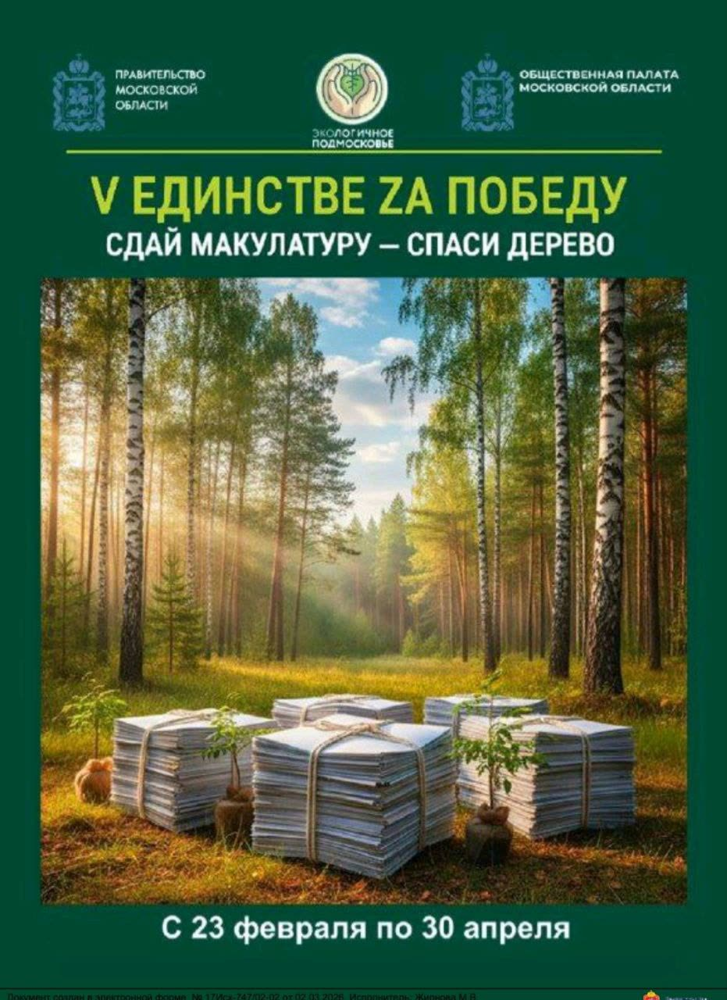

23 февраля — 30 апреля 2026
Сдай макулатуру — спаси дерево
Областная акция «V Единстве Zа Победу». Её цель — помочь участникам СВО из Подмосковья и жителям новых регионов, а заодно приучить к раздельному сбору и сберечь лес. Макулатуру принимает Центральная городская библиотека, ул. Ленина, 2.
Подробнее об акции